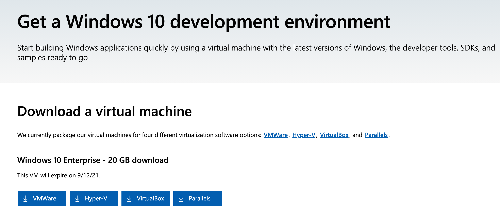

Windows 10 on macOS/Linux with VirtualBox¶
Even if you don’t have a Windows PC you can use a virtual machine to run a “evaluation” Microsoft licensed copy of Windows. It requires some effort on your part: you will be able to use the virtual machine for approximately one month, and then you will need reinstall the virtual machine with a new evaluation license. But this is a great method if you have a Linux or macOS computer and need to test out whether your source code compiles and runs correctly on a Windows (virtual) machine.
Install VirtualBox if you have not done so already.
Version 6.1.26 of VirtualBox has been tested.
Go to Microsoft’s Get a Windows 10 development environment webpage and download the VirtualBox VM:
Then extract the contents of the downloaded
.zipfile. It will contain a single file namedWinDevXXXXEval.ova.Open / double-click the
WinDevXXXXEval.ovafile. It should automatically launch VirtualBox in an “Import Virtual Appliance” window. You can proceed to step 4.If VirtualBox doesn’t automatically open, then launch VirtualBox, press Import virtual machine in the screen below, and select the
WinDevXXXXEval.ovafile:Accept all the defaults and press Import:
{kind=link}
{kind=link}
{kind=link}
After starting the virtual machine, you can complete the How to Install instructions.